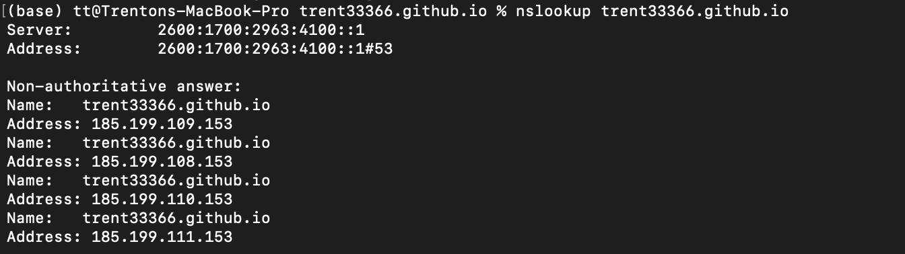
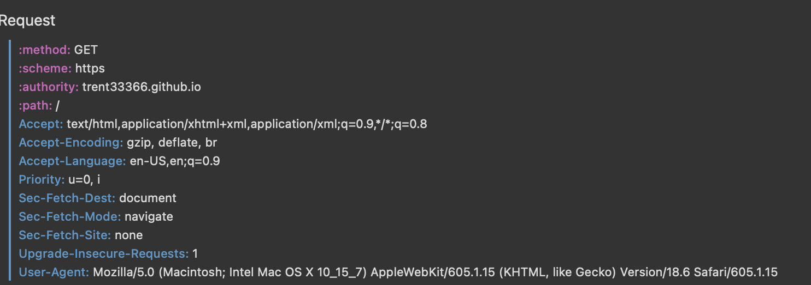

DNS is an application layer protocol which handles DNS requests from a client and returns the resolved IP address. The main part of a DNS request is the name, or url, of the website the client is attempting to reach. So think, when you wish to go to, lets say, www.google.com, this name is a URL which is sent as a DNS request to DNS lookup servers, which then returns the IP address back to your computer, allowing the computer to find and establish a connection with that website. DNS, as a service, exists almost exclusively to allow for a more “humanitarian” way to traverse the Internet. As in, because of DNS, humans only have to remember names like Amazon or YouTube rather than… whatever “[2001:0db8:85a3:08d3:1319:8a2e:0370:7344]” is. The DNS lookup process is typically protected by the DNSsec protocol which offers authenticity and integrity to the DNS server communications.
Of course, considering the sheer amount of websites there are, the DNS lookup process is streamlined via a hierarchical “parent-child” structure system which distributes the lookup process to dedicated servers or protocols based on the parent. So, for a URL like ‘trent33366.github.io’, a DNS lookup starts at the root parent ‘.’, which is implied at the end of the URL, so imagine “trent33366.github.io.” instead of just “trent33366.github.io” then, it traverses the list of ‘.’ children, identifies ‘io’ as the respective child, then on the next step of DNS lookup, the ‘io’ acts as the parent, and then attempts to locate its child “github.” and then so on to ‘github’ being the parent of the subdomain “trent33366.” Once the final stage of the DNS lookup process is finished, the IP is located and sent back to the client.
Once the client has the IP for the github.io website, it attempts a TLS connection with the https protocol. TLS is an application-layer cryptographic security protocol for establishing secure TCP connections between a client and a server. The client attempts a TLS connection by sending the server a TLS handshake message using the IP address, this message is essentially a query to the server to agree on the security protocols, encryption schemes, and cryptography of the TCP connection. Once the server responds and agrees with the cryptography scheme with their own handshake, the two have established a secure TCP connection.

Github pages uses TLS and enforces Https protocols via redirecting http requests to https.
Github pages receives it's cryptographic keys from Let's Encrypt. Find Github's official documentation
here.
